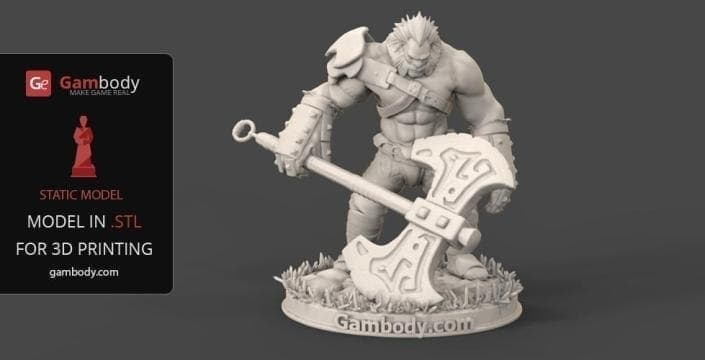
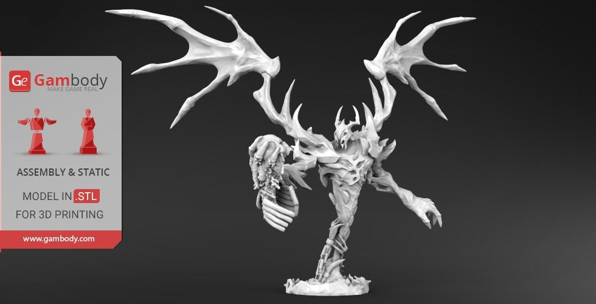

2026年07月09日STL图纸文件分享｜Axe 3D Print Model
提取码
ouar

本期模型已经完成文件整理与预览图匹配，便于查看模型内容并获取个人学习资源。
模型精选与导读：
- Axe 3D Print Model
- 简介：这是一件以战斧为主题的 3D 打印模型，造型重点集中在斧刃轮廓、握柄结构和整体武器比例。它适合用作角色道具、桌面摆件、游戏场景配件或涂装练习素材。
- 文件信息：压缩包约 19.75 MB，包含 1 个 STL 文件，并附带 OUART 自动整理后的说明文件。
打印与后处理建议：
- 结构检查：打印前建议在切片软件中检查斧刃尖端、握柄连接处和底部接触面，必要时增加局部支撑。
- 材质表现：斧刃适合金属色干扫，握柄可用木纹、皮革缠绕或旧化涂装强化道具感。
- 展示方式：可搭配简单底座或角色场景展示，作为模型道具库的一部分归档。
Happy Printing & Painting！
链接: https://pan.baidu.com/s/12RAP9wvZt5jdaIY9WjNkwg 提取码: ouar